항공산업기사 (2016-10-01 기출문제)
1과목: 항공역학
1. 다음 중 항력발산 마하수가 높은 날개를 설계할 때 옳은 것은?
- 쳐든각을 크게 한다.
- 날개에 뒤젖힘각을 준다.
- 두꺼운 날개를 사용한다.
- 가로세로비가 큰 날개를 사용한다.
(정답률: 74%)

2. 날개의 면적을 유지하면서 가로세로비만 2배로 증가시켰을 때 이 비행기의 유도항력계수는 어떻게 되는가?
- 2배 증가한다.
- 1/2 로 감소한다.
- 1/4 로 감소한다.
- 1/16 로 증가한다.
(정답률: 71%)
3. 물체 표면을 따라 흐르는 유체의 천이(transition)현상을 옳게 설명한 것은?
- 충격 실속이 일어나는 현상이다.
- 층류에 박리가 일어나는 현상이다.
- 층류에서 난류로 바뀌는 현상이다.
- 흐름이 표면에서 떨어져 나가는 현상이다.
(정답률: 88%)
4. 온도가 0℃, 고도 약 2300m 에서 비행기가 825m/s 로 비행할 때의 마하수는 약 얼마인가? (단, 0℃ 공기 중 음속은 331.2 m/s 이다.)
- 2.0
- 2.5
- 3.0
- 3.5
(정답률: 83%)
5. 에어포일 코드 ‘NACA 0009'를 통해 알 수 있는 것은?
- 대칭단면의 날개이다.
- 초음속 날개 단면이다.
- 다이아몬드형 날개 단면이다.
- 단면에 캠버가 있는 날개이다.
(정답률: 90%)
6. 다음 중 이륙 활주거리를 줄일 수 있는 조건으로 옳은 것은?
- 추력을 최대로 한다.
- 고항력 장치를 사용한다.
- 비행기의 하중을 크게 한다.
- 항력이 큰 활주 자세로 이륙한다.
(정답률: 88%)
7. 다음 중 ( ) 안에 알맞은 내용은?
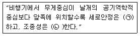
- ㉠ 감소 ㉡ 증가
- ㉠ 감소 ㉡ 감소
- ㉠ 증가 ㉡ 증가
- ㉠ 증가 ㉡ 감소
(정답률: 81%)
8. 날개드롭(wing drop)에 대한 설명으로 틀린 것은?
- 옆놀이와 관련된 현상이다.
- 한쪽 날개가 충격 실속을 일으켜서 갑자기 양력을 상실하며 발생하는 현상이다.
- 아음속에서 충격파가 과도할 경우 날개가 동체에서 떨어져 나가는 현상을 말한다.
- 두꺼운 날개를 사용한 비행기가 천음속으로 비행시 발생한다.
(정답률: 69%)
9. 500 rpm 으로 회전하고 있는 프로펠러의 각속도는 약 몇 rad/sec 인가?
- 32
- 52
- 65
- 104
(정답률: 64%)
10. 항공기 형상이 비행안정성에 미치는 영향을 옳게 설명한 것은?
- 후퇴각(sweepback)을 갖는 주 날개에서 측풍이 날개 익형에서 상대적인 공기속도를 변화시켜 항력 차이에 의한 복원 모멘트로 횡안정성이 개선된다.
- 고익(high wing) 항공기에서는 횡안정성을 저해하는 방향으로 동체주위의 유동이 날개의 받음각을 변화시킨다.
- 일정한 면적의 꼬리날개는 장착위치가 무게중심에 가까울수록 수직 및 수평안정판이 비행 안정성에 기여하는 영향이 크다.
- 상반각을 갖는 주 날개에서는 측풍이 좌측 및 우측 날개에서 받음각 차이로 양력의 차이를 발생시켜 횡안정성이 개선된다.
(정답률: 50%)
11. 다음 중 실속 받음각 영역이 다른 것은?
- 스핀
- 방향발산
- 더치롤
- 나선발산
(정답률: 64%)
12. 항공기 중량이 900kgf, 날개면적이 10m2인 제트 항공기가 수평 등속도로 비행할 때 추력은 몇 kgf 인가? (단, 양항비는 3이다.)
- 300
- 250
- 200
- 150
(정답률: 74%)
13. 조종면 효율변수(flap or control effectiveness parameter)를 설명한 것으로 옳은 것은?
- 양력계수와 항력계수의 비를 말한다.
- 플랩의 변위에 따른 양력계수의 변화량을 나타내는 값이다.
- 날개 면적을 날개 면적과 플랩 면적을 합한 값으로 나눈 값이다.
- 플랩 면적을 날개 면적과 플랩 면적을 합한 값으로 나눈 값이다.
(정답률: 59%)
14. 프로펠러가 항공기에 가해준 소요동력을 구하는 식은?
- 추력 / 비행속도
- 추력 × 비행속도2
- 비행속도 / 추력
- 추력 × 비행속도
(정답률: 66%)
15. 일반적인 헬리콥터 비행 중 주 회전날개에 의한 필요마력의 요인으로 보기 어려운 것은?
- 유도속도에 의한 유도항력
- 공기의 점성에 의한 마찰력
- 공기의 박리에 의한 압력항력
- 경사충격파 발생에 따른 조파항력
(정답률: 80%)
16. 무게 20000kgf, 날개면적 80m2인 비행기가 양력계수 0.45 및 경사각 30° 상태로 정상선회(균형선회) 비행을 하는 경우 선회반경은 약 몇 인가?(단, 공기밀도는 1.22 kg/m3이다.)
- 1820
- 2000
- 2800
- 3000
(정답률: 45%)
17. 상승 가속도 비행을 하고 있는 항공기에 작용하는 힘의 크기를 옳게 비교한 것은?
- 양력 > 중력, 추력 < 항력
- 양력 < 중력, 추력 > 항력
- 양력 > 중력, 추력 > 항력
- 양력 < 중력, 추력 < 항력
(정답률: 90%)
18. 대기를 구성하는 공기에 대한 설명으로 틀린 것은?
- 공기의 점성계수는 물보다 작다.
- 공기는 압축성 유체로 볼 수 있다.
- 공기의 온도는 고도가 높아짐에 따라서 항상 감소한다.
- 동일한 압력조건에서 공기의 온도 변화와 밀도변화는 반비례 관계에 있다.
(정답률: 76%)
19. 비행기가 등속도 수평비행을 하고 있다면 이 비행기에 작용하는 하중배수는?
- 0
- 0.5
- 1
- 1.8
(정답률: 83%)
20. 헬리콥터 구동 계통에서 자유회전장치(freewheeling unit)의 주된 목적은?
- 주 회전날개 제동장치를 풀어서 작동을 가능하게한다.
- 시동 중에 주 회전날개 깃의 굽힘응력을 제거한다.
- 착륙을 위해서 기관의 과회전을 허용한다.
- 기관이 정지되거나 제한된 주 회전날개의 회전 수 보다 느릴 때 주 회전날개와 기관을 분리한다.
(정답률: 81%)
2과목: 항공기관
21. 가스터빈엔진의 연료조정장치(FCU) 기능이 아닌것은?
- 파워레버의 위치에 따른 연료량을 적절히 조절한다.
- 연료흐름에 따른 연료필터의 계속 사용여부를 조정한다.
- 압축기 출구압력 변화에 따라 연료량을 적절히 조절한다.
- 압축기 입구압력 변화에 따라 연료량을 적절히 조절한다.
(정답률: 69%)
22. 가스터빈엔진에서 방빙장치가 필요 없는 곳은?
- 터빈 노즐
- 압축기 전방
- 흡입덕트 입구
- 압축기의 입구 안내 깃
(정답률: 75%)
23. 프로펠러 깃(propeller blade)에 작용하는 응력이 아닌 것은?
- 인장응력
- 굽힘응력
- 비틀림응력
- 구심응력
(정답률: 81%)
24. 정속 프로펠러(constant-speed propeller)는 엔진속도를 정속으로 유지하기 위해 프로펠러 피치를 자동으로 조정해 주도록 되어 있는데 이러한 기능은 어떤 장치에 의해 조정되는가?
- 3-way 밸브
- 조속기(governor)
- 프로펠러 실린더(propeller cylinder)
- 프로펠러 허브 어셈블리(propeller hub assembly)
(정답률: 89%)
25. 왕복엔진을 장착한 비행기가 이륙한 후에도 최대정격 이륙 출력으로 계속 비행하는 경우에 대한 설명으로 옳은 것은?
- 엔진이 과열되어 비행이 곤란해진다.
- 공기흡입구가 결빙되어 출력이 저하된다.
- 엔진의 최대 출력을 증가시키기 위한 방법으로 자주 이용한다.
- 연료소모가 많지만 1시간 이내에서 비행할 수 있다.
(정답률: 75%)
26. 왕복엔진의 마그네토 브레이커 포인트(breakerpoint)가 과도하게 소실되었다면 브레이커 포인트와 어떤 것을 교환해 주어야 하는가?
- 1차 코일
- 2차 코일
- 회전자석
- 콘덴서
(정답률: 80%)
27. 흡입공기를 사용하지 않는 제트엔진은?
- 로켓
- 램제트
- 펄스제트
- 터보 팬
(정답률: 89%)
28. 왕복엔진의 피스톤 오일 링(oil ring)이 장착되는 그루브(groove)에 위치한 구멍의 주요 기능은?
- 피스톤 무게를 경감해 준다.
- 윤활유의 양을 조절해 준다.
- 피스톤 벽에 냉각 공기를 보내준다.
- 피스톤 내부 점검을 하기 위한 통로이다.
(정답률: 74%)
29. 열역학에서 주어진 시간에 계(system)의 이전 상태와 관계없이 일정한 값을 갖는 계의 거시적인 특성을 나타내는 것을 무엇이라 하는가?
- 상태(state)
- 과정(process)
- 상태량(property)
- 검사체적(control volume)
(정답률: 68%)
30. 피스톤 핀과 크랭크축을 연결하는 막대이며, 피스톤의 왕복 운동을 크랭크축으로 전달하는 일을 하는 엔진의 부품은?
- 실린더 배럴
- 피스톤 링
- 커넥팅 로드
- 플라이 휠
(정답률: 89%)
31. 왕복엔진에서 물분사 장치에 대한 설명으로 틀린것은?
- 물을 분사시키면 엔진이 더 큰 추력을 낼 수 있게 하는 안티노크 기능을 가진다.
- 물과 소량의 알코올을 혼합시키는 이유는 배기가스의 압력을 증가시키기 위한 것이다.
- 물분사는 짧은 활주로에서 이륙할 때와 착륙을 시도한 후 복행할 필요가 있을 때 사용한다.
- 물분사가 없는 드라이dry)엔진은 작동허용범위를 넘었을 때 디토네이션으로 출력에 제한이 있다.
(정답률: 64%)
32. 민간용 가스터빈엔진의 공압 시동기에 대한 설명으로 틀린 것은?
- 시동완료 후 발전기로써 작동한다.
- APU, GTC에서의 고압 공기를 사용한다.
- 약 20% 전후 엔진rpm 속도에서 분리된다.
- 엔진에 사용되는 같은 종류의 오일로 윤활된다.
(정답률: 52%)
33. 가스터빈엔진의 추력감소 요인이 아닌 것은?
- 대기 밀도 증가
- 연료조절장치불량
- 터빈블레이드 파손
- 이물질에 의한 압축기 로터 블레이드 오염
(정답률: 74%)
34. 가스터빈엔진의 엔진압력비(EPR, enginepressure ratio)를 나타낸 식으로 옳은 것은?
- 터빈 출구압력 / 압축기 입구압력
- 압축기 입구압력 / 터빈 출구압력
- 압축기 입구압력 / 압축기 출구압력
- 압축기 출구압력 / 압축기 입구압력
(정답률: 61%)
35. 9개의 실린더로 이루어진 왕복엔진에서 실린더 직경 5in, 행정길이 6in 일 경우 총배기량은 약 몇 in3인가?
- 118
- 508
- 1060
- 4240
(정답률: 66%)
36. 왕복엔진의 마그네토 캠축과 엔진 크랭크축의 회전속도비를 옳게 나타낸 식은?(단, 캠의 로브수와 극수는 같고, n : 마그네토 극수, N : 실린더 수이다.)
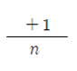
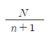
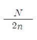
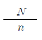
(정답률: 71%)
37. 그림과 같은 브레이턴사이클(Brayton cycle)의 P-V선도에 대한 설명으로 틀린 것은?
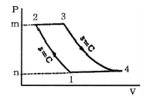
- 넓이 1-2-m-n-1 은 압축일이다.
- 1개씩의 정압과정과 단열과정이 있다.
- 넓이 1-2-3-4-1 은 사이클의 참일이다.
- 넓이 3-4-n-m-3 은 터빈의 팽창일이다.
(정답률: 78%)
38. 민간 항공기용 연료로서 ASTM에서 규정된 성질을 갖고 있는 가스터빈기관용 연료는?
- JP-2
- JP-3
- JP-8
- Jet-A
(정답률: 84%)
39. 항공기 가스터빈엔진의 성능평가에 사용되는 추력이 아닌 것은?
- 진추력
- 총추력
- 비추력
- 열추력
(정답률: 74%)
40. 마하 0.85로 순항하는 비행기의 가스터빈엔진 흡입구에서 유속이 감속되는 원리에 대한 설명으로 옳은 것은?
- 압축기에 의하여 감속된다.
- 유동 일에 대하여 감속한다.
- 단면적 확산으로 감속한다.
- 충격파를 발생시켜 감속한다.
(정답률: 63%)
3과목: 항공기체
41. 항공기기체 제작과 정비에 사용되는 특수용접에 속하지 않는 것은?
- 전기아크용접
- 플라스마용접
- 금속불활성가스용접
- 텅스텐불활성가스용접
(정답률: 64%)
42. 양극처리(anodizing)에 대한 설명으로 옳은 것은?
- 알루미늄합금에 은도금을 하는 것이다.
- 강철에 순수한 탄소피막을 입히는 것이다.
- 크롬산이나 황산으로 알루미늄합금의 표면에 산화피막을 만드는 것이다.
- 알루미늄합금의 표면에 순수한 알루미늄피막을 입히는 것이다.
(정답률: 75%)
43. 앞바퀴형 착륙장치의 장점으로 틀린 것은?
- 조종사의 시야가 좋다.
- 이착륙 저항이 적고 착륙성능이 양호하다.
- 가스터빈엔진에서 배기가스 분출이 용이하다.
- 고속에서 주 착륙장치의 제동력을 강하게 작동하면 전복의 위험이 크다.
(정답률: 82%)
44. 페일 세이프 구조 중 다경로구조(redundantstructure)에 대한 설명으로 옳은 것은?
- 단단한 보강재를 대어 해당량 이상의 하중을 이보강재가 분담하는 구조이다.
- 여러 개의 부재로 되어 있고 각각의 부재는 하중을 고르게 분담하도록 되어 있는 구조이다.
- 하나의 큰 부재를 사용하는 대신 2개 이상의 작은부재를 결합하여 1개의 부재와 같은 또는 그 이상의 강도를 지닌 구조이다.
- 규정된 하중은 모두 좌측 부재에서 담당하고 우측부재는 예비 부재로 좌측 부재가 파괴된 후 그 부재를 대신하여 전체하중을 담당한다.
(정답률: 82%)
45. 아이스박스 리벳인 2024(DD)를 아이스박스에 저온 보관하는 이유는?
- 리벳을 냉각시켜 경도를 높이기 위해
- 리벳의 열변화를 방지하여 길이의 오차를 줄이기위해
- 시효경화를 지연시켜 연한 상태를 연장시키기 위해
- 리벳을 냉각시켜 리벳팅 시 판재를 함께 냉각시키기 위해
(정답률: 85%)
46. 그림과 같이 벽으로부터 0.8m 지점에 250N 의 집중하중이 작용하는 1.0m 길이의 보에 대한 굽힘모멘트 선도는?
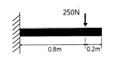
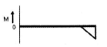
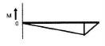
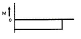
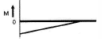
(정답률: 62%)
47. 외피(skin)에 주 하중이 걸리지 않는 구조형식은?
- 모노코크구조
- 트러스구조
- 세미모노코크구조
- 샌드위치구조
(정답률: 65%)
48. 섬유 강화플라스틱(FRP)에 대한 설명으로 틀린 것은?
- 내식성, 진동에 대한 감쇠성이 크다.
- 항공기의 조종면에는 FRP 허니컴 구조가 사용된다.
- 경도, 강성이 낮은데 비하여 강도비가 크다.
- 인장강도, 내열성이 높으므로 엔진마운트로 사용된다.
(정답률: 70%)
49. 최근 대형 항공기의 동체구조에 대한 설명으로 틀린 것은?
- 날개, 꼬리날개 및 착륙장치의 장착점이 존재한다.
- 응력 분산이 용이한 세미모노코크구조가 사용된다.
- 동체의 주요 구조부재는 정형재와 벌크헤드 및 외피로 구성된다.
- 동체는 화물, 조종실, 장비품, 승객 등을 위한 공간으로 활용된다.
(정답률: 66%)
50. 항공기의 케이블 조종계통과 비교하여 푸시풀로드 조종계통의 장점으로 옳은 것은?
- 마찰이 작다.
- 유격이 없다.
- 관성력이 작다.
- 계통의 무게가 가볍다.
(정답률: 61%)
51. 그림과 같은 볼트의 명칭은?
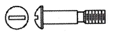
- 아이볼트
- 육각머리볼트
- 클레비스볼트
- 드릴머리볼트
(정답률: 78%)
52. 인장하중(P)을 받는 평판에 구멍이 있다면 구멍 주위에 생기는 응력분포를 옳게 나타낸 것은?
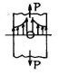
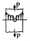
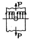
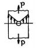
(정답률: 74%)
53. 기계재료가 일정온도에서 일정한 응력이 가해질때 시간이 경과함에 따라 계속적으로 변형률이 증가하게 되는데 이와 같이 시간 경과에 따라 변하는 변형률을 나타내는 그래프는?
- 피로(fatigue)곡선
- 크리프(creep)곡선
- 탄성(elasticity)곡선
- 천이(transition)곡선
(정답률: 81%)
54. 그림과 같은 V-n 선도에서 실속속도(VS) 상태로 수평비행하고 있는 항공기의 하중배수(nS)는?
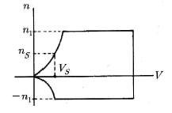
- 1
- 2
- 3
- 4
(정답률: 82%)
55. 판재 홀 가공 절차 중 리머작업에 대한 설명으로 옳은 것은?
- 강을 리밍할 때 절삭유를 사용하지 않는다.
- 드릴로 뚫은 작은 구멍의 안쪽을 매끈하게 가공한다.
- 홀 가공시 드릴 작업조다 빠른 회전 속도로 작업한다.
- 드릴로 뚫은 구멍의 안쪽의 부식을 제거한다.
(정답률: 84%)
56. 두께가 40/1000in, 길이가 2.75in인 2024 T3 알루미늄 판재를 AD리벳으로 결합하려면 몇 개의 리벳이 필요한가?(단, 2024 T3 판재의 극한인장응력은 60000psi, AD리벳 1개당 전단강도는 388 lb, 안전계수는 1.15 이다.)
- 15
- 18
- 20
- 39
(정답률: 38%)
57. 항공기 연료 계통에 대한 설명으로 틀린 것은?
- 연료 펌프로 가압 공급한다.
- 연료 탑재 위치는 항공기 평형에 영향을 준다.
- 탑재하는 연료의 양은 비행거리 및 시간에 따라 달라진다.
- 연료 탱크 내부에 수분 증발 장치가 마련되어 있다.
(정답률: 72%)
58. 알루미늄 합금판에 순수 알루미늄의 압연 코팅(coating)을 하는 알크래드(alcad)의 목적은?
- 공기 저항 감소
- 표면 부식 방지
- 인장강도의 증대
- 기체 전기저항 감소
(정답률: 86%)
59. 재료가 탄성한도에서 단위 체적에 축적되는 변형에너지를 나타내는 식은?(단, 응력, E 탄성계수이다.)
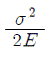
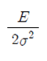
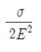
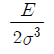
(정답률: 60%)
60. 판재를 굴곡작업하기 위한 그림과 같은 도면에서 굴곡 접선의 교차부분에 균열을 방지하기 위한 구엄의 명칭은?
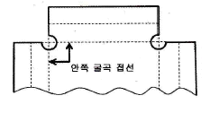
- Lighting hole
- Pilot hole
- Countsunk hole
- Relief hole
(정답률: 83%)
4과목: 항공장비
61. 다음 중 지향성 전파를 수신할 수 있는 안테나는?
- Loop
- Sense
- Dipole
- Probe
(정답률: 77%)
62. 그림에서 편차(variation)을 옳게 나타낸 것은?
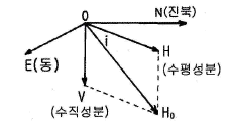
- N-O-H
- N-O-HO
- N-O-V
- E-O-V
(정답률: 71%)
63. 다음 중 화학적 방빙(anti-icing)방법을 주로 사용하는 곳은?
- 프로펠러
- 화장실
- 피토튜브
- 실속경고 탐지기
(정답률: 76%)
64. 레인 리펠런트(rain repellent)에 대한 설명으로 틀린 것은?
- 물방울이 퍼지는 것을 방지한다.
- 우천 시 항공기 이착륙에 와이퍼(wiper)와 같이 사용한다.
- 표면장력 변화를 위하여 특수용액을 사용한다.
- 강우량이 적을 때 사용하면 매우 효과적이다.
(정답률: 80%)
65. SELCAL(selective calling)은 무엇을 호출하기 위한 장치인가?
- 항공기
- 정비타워
- 항공회사
- 관제기관
(정답률: 72%)
66. 유압계통에서 유압관 파손 시 작동유의 과도한 누설을 방지하는 장치는?
- 유압 퓨즈
- 흐름 평형기
- 흐름 조절기
- 압력 조절기
(정답률: 87%)
67. 20 hp의 펌프를 작동시키기 위해 몇 kW의 전동기가 필요한가? (단, 펌프의 효율은 80% 이다.)
- 8
- 10
- 12
- 19
(정답률: 41%)
68. 발전기와 함께 장착되는 역전류차단장치(reversecurrent cut-out relay)의 설치목적은?
- 발전기 전압의 파동을 방지한다.
- 발전기 전기자의 회전수를 조절한다.
- 발전기 출력전류의 전압을 조절한다.
- 축전지로부터 발전기로 전류가 흐르는 것을 방지한다.
(정답률: 86%)
69. 다음 중 화재 진압 시 사용되는 소화제가 아닌 것은?
- 이산화탄소
- 물
- 암모니아가스
- 하론1211
(정답률: 82%)
70. 다음 중 합성 작동유 계통에 사용되는 씰(seal)은?
- 천연 고무
- 일반 고무
- 부틸 합성 고무
- 네오프렌 합성 고무
(정답률: 64%)
71. 자이로의 섭동성을 나타낸 그림에서 자이로가 굵은 화살표 방향으로 회전하고 있을 때, 힘(F)을 가하면 실제로 힘을 받는 부분은?
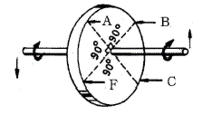
- F
- A
- B
- C
(정답률: 74%)
72. 정전용량 20 , 인덕턴스 0.01H, 저항 10Ω이 직렬로 연결된 교류회로가 공진이 일어났을 때 전압전압이 30V 라면 전류는 몇 A 인가?
- 2
- 3
- 4
- 5
(정답률: 55%)
73. 객실고도를 옳게 설명한 것은?
- 운항중인 항공기 객실의 실제 고도를 해발고도로 표현한 것
- 항공기 외부의 압력을 표준대기 상태의 압력에 해당되는 고도로 표현한 것
- 항공기 내부의 압력을 표준대기 상태의 압력에 해당되는 고도로 표현한 것
- 항공기 내부이 기온을 현재 비행 상태의 외기 온도에 해당되는 고도로 표현한 것
(정답률: 79%)
74. 액량계기와 유량계기에 관한 설명으로 옳은 것은?
- 액량계기는 대형기와 소형기가 차이 없이 대부분 동압식 계기이다.
- 액량계기는 연료탱크에서 기관으로 흐르는 연료의 유량을 지시한다.
- 유량계기는 연료탱크에서 기관으로 흐르는 연료의 유량을 시간당 부피 또는 무게단위로 나타낸다.
- 유량계기는 직독식, 플로우트식, 액압식 등이 있다.
(정답률: 72%)
75. 유압계통의 압력서지(pressure surge)를 완화하는 역할을 하는 장치는?
- 펌프(pump)
- 리저버(reservoir)
- 릴리프밸브(relief valve)
- 어큐물레이터(accumulator)
(정답률: 64%)
76. 활주로 진입로 상공을 통과하고 있다는 것을 조종사에게 알리기 위한 지상장치는?
- 로컬라이저(localizer)
- 마커비컨(marker beacon)
- 대지접근경보장치(GPWS)
- 글라이드슬로프(glide slope)
(정답률: 66%)
77. 발전기의 무부하(No-load)상태에서 전압을 결정하는 3가지 주요한 요소가 아닌 것은?
- 자장의 세기
- 회전자의 회전방향
- 자장을 끊는 회전자의 수
- 회전자가 자장을 끊는 속도
(정답률: 52%)
78. 속도계에만 표시되는 것으로 최대 착륙하중시의 실속속도에서 플랩(flap)을 내릴 수 있는 속도까지의 범위를 나타내는 색 표식의 색깔은?
- 녹색
- 황색
- 청색
- 백색
(정답률: 79%)
79. 다음 중 니켈-카드뮴 축전지에 대한 설명으로 틀린 것은?
- 전해액은 질산계의 산성액이다.
- 진동이 심한 장소에 사용 가능하고, 부식성 가스를 거의 방출하지 않는다.
- 고부하 특성이 좋고 큰 전류 방전 시 안정된 전압을 유지한다.
- 한 개의 셀(cell)의 기전력은 무부하 상태에서 1.2~ 1.25V 정도이다.
(정답률: 61%)
80. 전방향 표지시설(VOR) 주파수의 범위로 가장 적절한 것은?
- 1.8 ~ 108 kHz
- 18 ~ 118 kHz
- 108 ~ 118 MHz
- 130 ~ 165 MHz
(정답률: 76%)